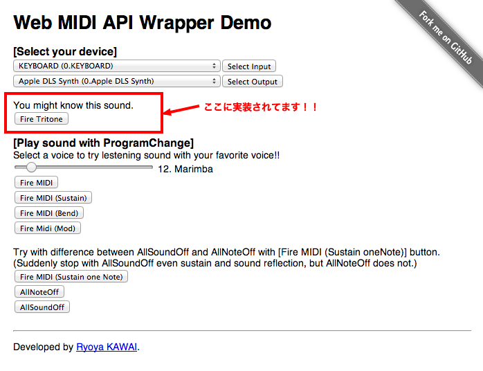

前回に引き続き Web MIDI API Wrapper についての説明です。今回は具体的な MIDI メッセージの送信の方法になります。
本題の前に、またまた MIDI ってどこで使われているかコーナーです。
MIDI には Show Control(MSC) という仕様があります。
前回の Universal Studio の Water World も MSC の一例でした。今回もその続きです。
そして Showといえば、Las Vegas かな？っていう勝手な想いがありまして、
今回はそこで利用されている例です。映画 Ocean’s Eleven って御存知ですか？？
Las Vegas のカジノに泥棒に入るっていうストーリーですが、
最後のシーンで噴水ショーがが出てくるんです。あれが Las Vegas の
ベラージオ (Bellagio) のショーというのは有名だと思います。なんと、あのコントロールのオリジナルのシステムは MIDI なんですよ〜！！
さて、本題です。前回もお伝えしましたが、Web MIDI API Wrapperは基本的な以下のメッセージに対応にしています。
- NoteOn：音を鳴らす
- NoteOff：音を止める
- PitchBend：ピッチを上下させる
- Sustain：ダンパーペダルの操作
- Modulation：揺らぎ
- AllSoundOff：残響、Sustainを含め即時に全ての音を止める
- ResetAllController：PitchBend、After-Touchなどのコントローラを初期値に戻す
- AllNoteOff：発音している音を全て止める
ということで、まずは NoteOn/NoteOff についてです。
NoteOnは「音を発音させてね」、NoteOffは「発音している音を停止させてね」
を知らせる Message です。えっ「コンピュータで音を鳴らすんだから、
例えばNoteOnの時にどれだけ長さ(時間)音を出すか指定しちゃえばいいじゃない。」
という印象をお持ちの方もいらっしゃると思いますが、もともと MIDI というのは電子楽器と電子楽器を
つなげ相互にコントロールを可能とする Protocol なので、コンピュータなら最初から音を出す時間を指定できちゃいますが、
リアルタイムの演奏ではそれはできないですよね〜、というところから NoteOn、NoteOff に分かれているのです。
sendNoteOn(portNo, ch, note, velocity, time);
- portNo：送信先のMIDI機器(Port)を指定
- ch：送信先のMIDI機器(portNoで指定)のチャンネルを指定
- note：鳴らすnote番号を指定
- velocity：鳴らすnoteのvelocityを指定
- time：音を鳴らすタイミング(いつ音を鳴らすかをミリ秒で指定)
NoteOnのvelocityに関して：velocityを直訳すると「速さ、速力」ですが、MIDI機器側では音の強弱に割り当てられている場合がほとんどです。数値の目安は1：ppp、64：mpとmfの中間、127：fff というのが目安です。
note番号に関して：中央のC(C4：ド)を60として白鍵、黒鍵関係なく鍵盤1つに対して数字が割り当てられています。
よって、88鍵ですと21〜108まで割り当てられていることになります。
例えばC4の右隣の白鍵D4は62、その間にある黒鍵は61です。note番号の図 右にスクロールすると見えてきます。
sendNoteOff(portNo, ch, note, velocity, time);
- portNo：送信先のMIDI機器(Port)を指定
- ch：送信先のMIDI機器(portNoで指定)のチャンネルを指定
- note：停止するnote番号を指定
- velocity：停止するnoteのvelocityを指定
- time：音を停止するタイミング(いつ音を鳴らすかをミリ秒で指定)
- NoteOffのvelocityに関して：鍵盤から手を離す速度と認識する機器もあり、その場合は音の余韻の長さを指定できます。NoteOnのvelocityをゼロにしてNoteOffの代わりにすることも可能です。
sendProgramChange(portNo, ch, programNo, time);
- portNo：送信先のMIDI機器(Port)を指定
- ch：送信先のMIDI機器(portNoで指定)のチャンネルを指定
- programNo：変更する音色番号
- time：適応するタイミング(いつ音色を変更するかミリ秒で指定)
setPitchBendValue(portNo, min, max, center);
- portNo：設定するMIDI機器(Port)を指定
- min：PitchBendの最小値
- max：PitchBendの最大値
- center：PitchBendの中央値(PitchBendがかかっていない状態)
- PitchBendに関して：範囲は16383と決まっていますが、MIDI機器によって中央を0、または中央が8192と違う場合があります。Web MIDI API Wrapperの初期設定値は中央：8192、最小：0、最大：16383 としています。
- sendPitchBend(portNo, ch, value, time);
- portNo：送信先のMIDI機器(Port)を指定
- ch：送信先のMIDI機器(portNoで指定)のチャンネルを指定
- value：適応するPitchBendの値を指定
- time：適応するタイミング(いつPitchBendを適応すかをミリ秒で指定)
数値に関してはここが参考になると思います。
sendSustainStatus(portNo, ch, status, time);
- portNo：送信先のMIDI機器(Port)を指定
- ch：送信先のMIDI機器(portNoで指定)のチャンネルを指定
- status：Sustainの指定を”on”、”off”で指定
- time：適応するタイミング(いつSustainを適応すかをミリ秒で指定)
Sustainとは：ピアノで言うと一番右のペダルを踏んだ時の効果です。
sendModulationValue(portNo, ch, value, time);
- portNo：送信先のMIDI機器(Port)を指定
- ch：送信先のMIDI機器(portNoで指定)のチャンネルを指定
- value：Modulationのかけ具合を数値で指定
- time：適応するタイミング(いつModulationを適応すかをミリ秒で指定)
Modulationとは：音の揺らぎです。
endAllSoundOff(portNo, ch, time);
- portNo：送信先のMIDI機器(Port)を指定
- ch：送信先のMIDI機器(portNoで指定)のチャンネルを指定
- time：適応するタイミング(いつallSoundOffを適応すかをミリ秒で指定)
- Sustainが動作していて、残響があったとしても即座に全ての音を停止する。AllNoteOffよりも強力。
sendAllNoteOff(portNo, ch, time);
- portNo：送信先のMIDI機器(Port)を指定
- ch：送信先のMIDI機器(portNoで指定)のチャンネルを指定
- time：適応するタイミング(いつallNoteOffを適応すかをミリ秒で指定)
その名の通りで、全てのNoteOnをNoteOffにする。よって、Sustainが動作していて残響ある場合はこの範囲ではない。
sendResetAllController(portNo, ch, time);
- portNo：送信先のMIDI機器(Port)を指定
- ch：送信先のMIDI機器(portNoで指定)のチャンネルを指定
- time：適応するタイミング(いつResetAllControllerを適応すかをミリ秒で指定)
PitchBend, After-Touch等のコントローラを初期値に戻す。
sendRaw(portNo, msg, time);
- portNo：送信先のMIDI機器(Port)を指定
- msg：送信するMIDIメッセージをArray型で指定
- time：適応するタイミング(いつSustainを適応すかをミリ秒で指定)
生のMIDIメッセージを送ることができます。例えばSysExを送信します。
initializePerformanceNow();
時間を初期化して、現在をスタート時間とします。再生する前に必ず実行してください。
さて、以上が Web MIDI API Wrapper が現状サポートしている MIDI メッセージになります。それでは引き続き実際に、 NoteOn/NoteOff と ProgramChange で馴染みのあるだろうこんなのを作ってみました。
/**
* 前回からの引き続きですので、Constructor は引き継いていでいます。
* 詳しくは前回のPOSTを御覧ください。
*/
wmaw.initializePerformanceNow();
wmaw.sendProgramChange(0, 0, 12, 0);
wmaw.sendNoteOn(0, 0, 62, 127, 0);
wmaw.sendNoteOff(0, 0, 62, 0, 120);
wmaw.sendNoteOn(0, 0, 69, 127, 120);
wmaw.sendNoteOff(0, 0, 69, 0, 240);
wmaw.sendNoteOn(0, 0, 74, 127, 240);
wmaw.sendNoteOff(0, 0, 74, 0, 360);
詳しく見てみます。
- 5行目：時間を初期化
- 6行目：音色を12（マリンバ）に変更
- 8, 9行目：D4(レ)を120ms鳴らす
- 11, 12行目：A4(ラ)を120ms鳴らす
- 14, 15行目：D5(レ)を120ms鳴らす
ということが行われています。
実際にどうなるかというのは デモページ のここ▼に実装してありますので試してみてください。多分聞いたことがあると思いますよ。

では今回はこの辺にして、次回は初心に戻り、素で Web MIDI API を使う場合について説明していこうと思います！！
お楽しみに^^v
[更新履歴] 2013/08/26 sendRaw() の説明を追加しました。